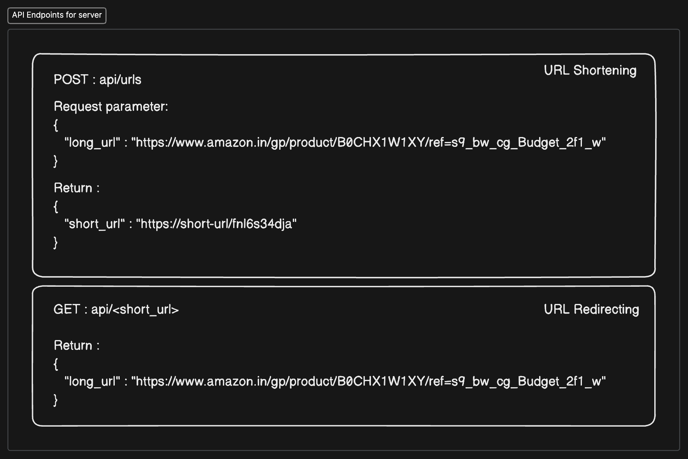
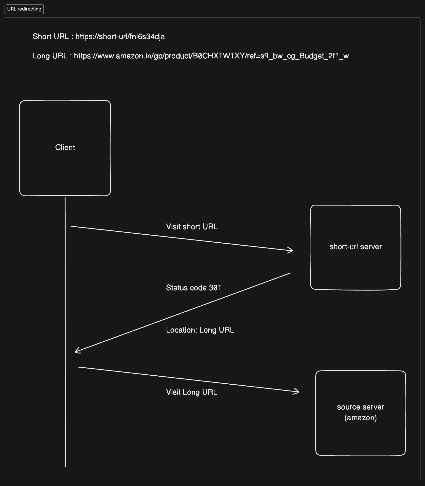

A. Introduction
Designing a URL shortener, like TinyURL, is a classic problem in system design that offers a great opportunity to explore key design concepts. It’s not just about shrinking URLs—there’s a lot more going on behind the scenes.
In this blog, I’m excited to share how I approached this problem. I’ll walk you through my thought process, the challenges I faced, and the design decisions I made to turn long URLs into short, manageable links.
B. Understanding the Problem and Establishing Design Scope
Before diving into the design, let’s clarify the requirements of a URL Shortener service—what it does, why it’s needed, and who benefits from it.
A URL shortener takes a long URL and converts it into a shorter, more manageable version. The primary goal is to create a compact web address that’s easier to share, remember, and track. This service typically shortens the URL by adding a random sequence of letters and numbers. For example, a URL shortener can transform a lengthy URL like:
https://www.amazon.in/gp/product/B0CHX1W1XY/ref=s9_bw_cg_Budget_2f1_w
into a much shorter one like:
https://tinyurl.com/ypbd82wy
B.1. Scope and Assumptions
Now that we have a clear understanding of what a URL Shortener is, let’s delve deeper into the specifics and outline the requirements. To do this, we’ll address the following questions:
B.1.1. What are the key functional features required for this service?
The service should convert a long URL into a short one, and when the shortened URL is accessed, it should redirect the user to the original long URL.
B.1.2. What is the expected duration of the service’s operation?
For the purpose of this design, we’ll assume the service will run for the next 10 years.
B.1.3. How many URLs will the system need to handle simultaneously?
We’ll assume the system may need to manage up to 1,000 URLs concurrently.
B.1.4. What characters will be used in the shortened URLs?
The shortened URLs will use alphanumeric characters.
B.1.5. How long should the shortened URLs be?
The URLs should be kept as short as possible while maintaining uniqueness.
B.1.6. What should happen if two or more users submit the same long URL?
Initially, the same short URL can be returned for identical long URLs. In the future, we can incorporate analytics or additional metadata to create user-specific shortened URLs.
Next, we calculate the system’s capacity to ensure it can handle the required load. Given the need to manage around 1,000 URLs concurrently over a period of 10 years, we can estimate the total number of URLs the service will need to handle. The calculation is as follows:
⇒ 60 seconds x 60 minutes x 24 hours x 365 days x 10 years x 1,000 URLs = 315 billion URLs over 10 years
This means the system needs to generate at least 315 billion unique URLs over the course of 10 years using alphanumeric short URLs.
To determine how many characters are needed to support this capacity, we can calculate:
⇒ Alphanumeric characters: a-z (26) + A-Z (26) + 0-9 (10) = 62 possible combinations
⇒ Since 62^7 = 3.5 trillion, using 7 characters will provide more than enough combinations to handle the required number of URLs over the next 10 years.
For each URL, let’s estimate the space required:
Shortened URL: 7 bytes (1-2 bytes per character)
Long URL: Assume around 100 bytes
Metadata: 500 bytes (e.g., userId, isValid status)
This totals approximately 1,000 bytes per URL.
Given the need to store 315 billion URLs over 10 years:
⇒ 1,000 bytes x 315 billion URLs = 315 TB of storage space required.
C. Deep-Dive into designing

C.1. Client (Frontend/User Interface)
The frontend is where users interact with the URL shortener. It’s the part of the application that makes shortening URLs easy and intuitive. The challenge here is to design a user interface (UI) that is both simple and powerful without unnecessary complexities.
C.1.1. Frontend Design: Simplified for Usability
Basic Form – The Core Interaction
Every URL shortener needs a form where users can input their long URLs. But simplicity is key. A clean, minimal form with just one field (for the long URL) and a button (to generate the short link) reduces cognitive load for users. Users don’t want to be bombarded with options—just a quick, easy solution to shorten their URLs.Optional Tracking – Adding Value with Insights
Some users may want more than just shortened URLs. Adding a feature for tracking how many times each short URL was clicked gives users insights into how their links are performing. This feature could be optional, visible only to users who need it. By offering advanced analytics, we provide added value to the core functionality.
Tech Stack Consideration: For the frontend, using modern frameworks like React or Vue.js allows for a fast, responsive interface. These frameworks also make it easier to scale and add new features as the project evolves. We can also utilise Tailwind.css or shadcn-ui to give a minimalistic look.

C.2. Server (Backend/API)
The backend is where the heavy lifting happens. It processes the logic, manages the data, and ensures that requests are handled efficiently. The decisions made here directly impact the system’s scalability and performance.
C.2.1. Core API Functions: The Building Blocks
Shorten URL – Creating Unique Short Links
The core functionality of the backend is to accept long URLs from the frontend, generate unique short URLs, and store this mapping in a database. There are different ways to generate short URLs. You could use hashing algorithms (e.g., MD5 or SHA-256) or a counter-based system that assigns a unique ID for each URL and encodes it (e.g., using Base62).Hashing ensures that similar URLs produce distinct results, while a counter-based system can be faster but may require additional collision checks. Both approaches scale well but differ in complexity and performance.
Redirect URL – Efficient Lookup and Redirection
When a user accesses a short URL, the backend retrieves the corresponding long URL from the database and redirects the user. This operation needs to be lightning-fast to avoid any latency in the user experience. By using indexed database queries and possibly caching frequently accessed short URLs, we can ensure efficient lookups and near-instantaneous redirection.Optimizing database lookups (e.g., through caching) and ensuring that the redirection process is swift prevents slowdowns and improves the overall user experience.
Analytics API (Optional) – Tracking Engagement
If you want to give users the ability to track how often their links are used, an analytics API can be added to collect data such as click counts, user demographics, or referral sources. Implementing this feature requires balancing between data collection and performance, ensuring that analytics don’t slow down the core functionality.Offering analytics as an optional feature allows users to gain valuable insights into their links’ performance, adding another dimension to the service.
Tech Stack Consideration: For the backend, using a highly scalable and fast server-side language like Node.js, Python, or Go is ideal. These languages have great frameworks (like Express.js for Node.js or Flask for Python) that handle API requests efficiently.
Here are the API endpoints that can be created to support these feature:

C.2.2. Backend Logic : How It All Works Together

- URL Shortening Process
When a user submits a long URL, the backend generates a unique short link. This could be achieved through hashing or by assigning a unique ID. The URL pair is then stored in the database. A system like MongoDB or MySQL can be used, depending on the size and complexity of the project. NoSQL databases like MongoDB are great for flexibility and scalability, especially if you expect to store billions of URLs.

- Redirection Process
Upon accessing a short URL, the backend retrieves the original URL from the database and redirects the user. If a caching layer (like Redis) is used, popular URLs can be served even faster, reducing the load on the database and improving response times.

- Analytics (Optional)
If analytics are enabled, the backend can track each visit to the short URL. Data such as the number of clicks, user details, and timestamps can be stored for further analysis. However, it’s essential to balance this tracking to avoid impacting performance.
C.2.3. Tech Stack
To ensure efficient processing and scalability, the following technologies can be used:
Language: Common backend languages include Node.js, Python, or Go.
Framework: The backend framework can be Express.js (Node.js), Flask (Python), or Gin (Go) to handle API requests efficiently.
Database: Data can be stored in either a relational database like MySQL or a NoSQL database like MongoDB to support large-scale URL mappings.
This backend design ensures that the service is scalable, fast, and capable of handling high volumes of traffic with optional analytics support.
C.3. Load Balancer
As the popularity of our URL shortener grows, managing increased traffic becomes critical to avoid downtime and ensure seamless user experience. A load balancer is a key component that distributes incoming traffic across multiple servers, ensuring no single server bears too much load, which could lead to crashes or performance degradation.
Strategy: To evenly distribute traffic, we can use algorithms like Round-Robin or Least Connections. Round-Robin cycles through servers in a balanced way, while Least Connections ensures that servers with fewer active requests receive more traffic, optimizing overall performance.
Tech Stack: Tools like Nginx or AWS Elastic Load Balancing are well-suited for handling traffic distribution across multiple servers efficiently.
Implementing load balancing ensures higher availability and prevents bottlenecks by spreading out the traffic, making sure no single server is overwhelmed. This not only improves reliability but also optimizes resource utilization, especially as traffic scales.
C.4. Caching Layer
Frequent database lookups can slow down response times, especially as the user base grows. A caching layer helps mitigate this by storing frequently accessed URL mappings in memory, allowing the system to retrieve data much faster than querying the database each time.
Strategy: The caching layer should prioritize storing the most popular URL mappings. By using policies like Least Recently Used (LRU), the cache remains efficient, keeping the most relevant data available in memory while discarding outdated information.
Tech Stack: Tools like Redis or Memcached are excellent choices for building a robust caching layer. Both provide high-speed, in-memory data storage that significantly reduces the load on the database and improves response times.
Caching reduces the need for repeated database queries, enhancing the performance of frequently accessed URLs and providing a smoother user experience. By alleviating pressure on the database, the system scales more effectively without sacrificing speed.
C.5. Database (Storage)
To support millions, or even billions, of URL mappings, a well-designed and scalable database is essential. The database must efficiently store, query, and update URL mappings, ensuring the system can handle high volumes of both reads and writes.
Schema Design: The database schema should store short URL mappings alongside their original long URLs, user-related metadata, and expiration details (if applicable). Key fields include:
short_url: The unique identifier for the shortened URL.
long_url: The original URL.
user_id (optional): To track ownership if needed.
is_valid: Indicates if the shortened URL is still active.
created_at, expires_at: For tracking URL expiration or time-sensitive URLs.
Scalability: Choosing the right database is crucial for handling large-scale operations. MySQL works well for structured data and is suitable for smaller applications. However, MongoDB (NoSQL) is often a better choice for larger, more flexible applications that need to scale horizontally, especially when dealing with unstructured or rapidly growing data.
Sharding and Replication: As the system grows, sharding (dividing the database into smaller, more manageable parts) and replication (duplicating data across multiple servers) become essential for maintaining high performance and availability. These techniques distribute the load, ensuring the system remains responsive as it scales.
By designing a scalable and efficient database schema, you ensure the system can handle growth without experiencing performance bottlenecks. Proper sharding and replication strategies help maintain fast read and write operations, which is critical for any high-traffic application.
C.6. URL Generation Algorithm
Generating unique and reliable short URLs is the core of any URL shortener. The right algorithm ensures that each URL gets a distinct short link without clashes.
- Hash-Based Approach: One method is using a hashing algorithm like MD5 or SHA-256 to generate a unique short link for each URL. Hashing is useful because it consistently generates distinct outputs, even for similar inputs, making it ideal for creating unique URLs.
- Counter-Based Approach: Alternatively, a counter-based system can assign a unique ID to each new URL. The ID is then encoded (e.g., using Base62) to generate a short URL. While this method is faster, it requires careful tracking to avoid collisions and may involve a little more overhead in maintaining uniqueness.
- Collision Handling: Regardless of the approach, handling potential collisions (two URLs generating the same short link) is essential. If a collision is detected, a strategy like rehashing the URL or incrementing the counter can be used to generate a new, unique short link.
By selecting the right URL generation strategy and preparing for potential collisions, you ensure that the system consistently generates unique short links without errors. This step is crucial for maintaining data integrity and preventing conflicts within the system.
D. Challenges and Trade-offs
Building a URL shortener involves several challenges and trade-offs that need to be carefully managed to ensure efficiency, scalability, and reliability:
1. Scalability
As traffic grows, handling it effectively requires strategies like load balancing, caching, and database sharding. These ensure that the system can handle increased requests without performance bottlenecks or downtime.
2. Database Choice
Choosing between SQL and NoSQL is critical. SQL databases provide structure and consistency but may struggle under heavy loads. NoSQL databases, like MongoDB, scale better for high traffic but may compromise on data consistency, making the choice a balance between structure and scalability.
3. Collision Handling
In hash or counter-based URL generation, the risk of collisions—where two URLs generate the same short link—must be addressed. The trade-off here is between speed and ensuring uniqueness, as more reliable methods may be slower.
4. Caching
Caching frequently accessed URLs helps improve response times, but improper cache management can lead to outdated or stale data. Implementing policies like Least Recently Used (LRU) helps strike a balance between performance and data freshness.
5. Redirection Speed
To ensure users are quickly redirected, optimizing redirection speed through in-memory caching solutions like Redis is crucial. However, managing memory efficiently becomes a challenge as the system scales.
6. Security
Preventing malicious use of shortened URLs adds complexity. Implementing URL filtering and validation checks ensures security but may slow down the overall process.
7. URL Expiration & Analytics
Handling expiring URLs adds complexity to the database and requires scheduled cleanup. Additionally, tracking analytics like clicks and user data provides value but increases storage and processing demands, potentially affecting overall performance.
Effectively balancing these factors allows the URL shortener to be scalable, fast, and secure, while still providing a smooth user experience.
E. Conclusion
In conclusion, designing a URL shortener system involves much more than just converting long URLs into shorter ones. The process requires careful consideration of system scalability, efficient URL storage and retrieval, and the potential for additional features like analytics and custom URL generation. By tackling challenges like efficient database querying, implementing caching layers, and balancing server loads, a robust, scalable service can be created that meets user needs while maintaining performance.
This deep dive into the key design components—such as the frontend, backend, load balancing, and database architecture—provides valuable insights into the thought processes and technical decisions behind building a URL shortener. Whether it’s optimizing user experience, ensuring the system can handle billions of URLs, or planning for future growth, the design choices made here lay the groundwork for a reliable, scalable URL shortening service that’s ready to handle real-world demands.
I hope this exploration has offered useful strategies and insights. Thank you !